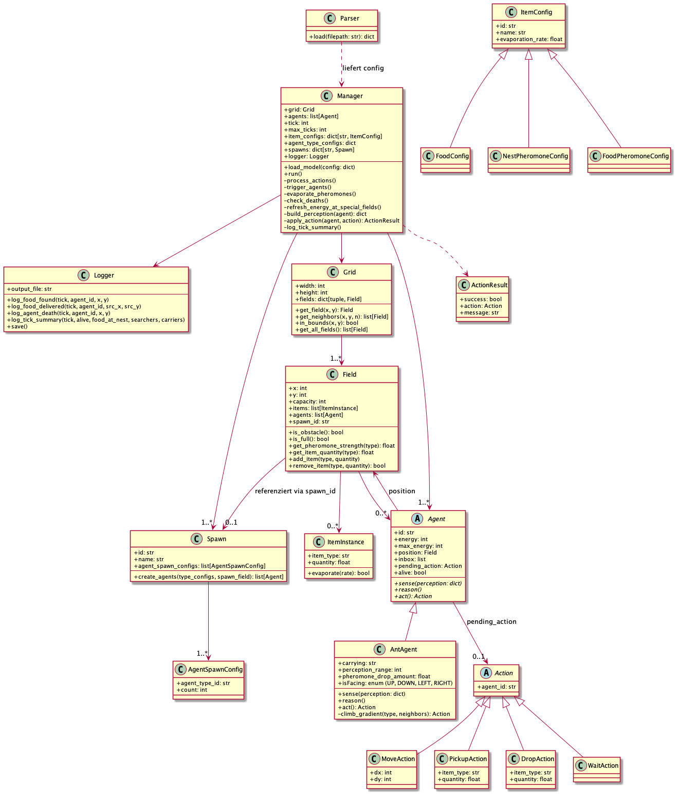
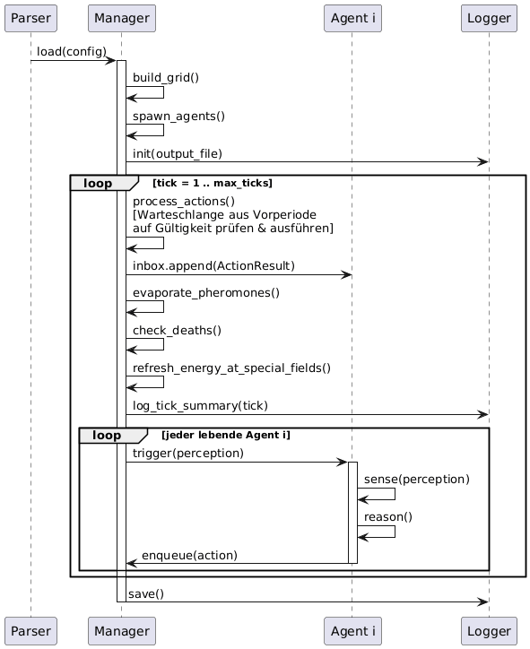

TU Berlin – SoSe 2026 – Agententechnologien - Gruppe 18
Moritz Clerc 498074, Carlos Driller 495897, David Brandes 495394

Der Manager ist die zentrale Instanz des Systems.
Der Manager liest die Modelldatei für ein Experiment per Parser ein und führt eine Simulation des Experimets durch.
Jeweils ein Manager wird pro Simulation im gleichen Experiment instanziiert.
Die relevanten Ereignisse loggt der Manager mithilfe des Logger.
Ein Grid ist eine n x m-matrix von Field-Objekten. Koordinatenursprung (0,0) ist unten links.
Ein Field repräsentiert eine Zelle. capacity == 0 bedeutet Hindernis. Felder mit einer spawn_id="nest_*" sind Nester und frischen die Energie eines eintreffenden AntAgent sofort und kostenlos auf.
Ein Spawn konfiguriert, welche Agenten in welcher Anzahl erzeugt werden. Für diese Aufgabe gibt es ein Spawn an dem ausschließlich Ant-Agenten gespawnt werden, die Abstraktion erlaubt mehrere Spawnpunkte und auch, dass verschiedene Agententypen an der gleichen Stelle gespawnt werden können.
ItemInstance ist nicht ein einzelnes Item, sondern eine Anzahl von Items, da nicht jedes Item einzeln instantiiert wird. Über item_type wird definiert um welches Item es sich handelt und in den Subklassen von ItemConfig werden die Details zu einem Item definiert. Aktuell sind diese Infos nur id (diese dient zum linken zwischen ItemInstance und der jeweiligen ItemConfig), name und evaporation_rate.
Info: Config Klassen wie ItemConfig werden in Python benutzt für Daten, die nur gespeichert werden. In den ItemConfig Subklassen werden lediglich Daten über die Eigenschaften von Items gespeichert, deswegen wurde diese Namenskonvention gewählt.
Die quantity von einer ItemInstance mit item_type="food" wird durch Ant-Agenten dekrementiert. Die quantity von einer ItemInstance mit item_type="pheromone_nest" oder item_type="pheromone_food" wird in jedem Zeittakt von dem Manager basierend auf ihrer evaporation_rate dekrementiert, bei Stärke 0 wird die Pheromonen-Instanz entfernt.
Es gibt lediglich zwei Pheremonentypen, Food- und Nestpheremone.
Die Klasse Agent ist abstrakt, sodass potentiell weitere Agententypen eingeführt werden können. Die konkrete Subklasse AntAgent implementiert den reaktiven Ameisenalgorithmus. Die Wahrnehmung umfasst die Items auf dem eigenen Feld sowie die Pheromonwerte der direkten Nachbarfelder (4-Nachbarschaft). Die Navigation erfolgt probabilistisch.
Ein AntAgent kann nur in die Richtungen des Enums Direction = {UP, DOWN, LEFT, RIGHT} bewegen. In isFacing wird gespeichert in welche Richtung der AntAgent zuletzt gegangen ist. Beim Wählen des nächsten Zugs wird die entgegengesetzte Richtung probabilistisch benachteiligt, so dass eine sinnlose Vor-und-Zurück-Bewegung unwahrscheinlicher auftritt.
In einer Action steckt die Absicht eines Agenten. Die konkreten Subklassen der abstrakten Action Klasse sind: MoveAction, PickupAction, DropAction, WaitAction. Der Manager prüft jede Aktion auf Gültigkeit und legt das ActionResult in die Inbox des Agenten.
Der Parser nimmt ein Experiment als JSON (siehe 2. Simulationsmodell) und gibt eine Liste an Simulationen zurück. Für jede Simulation wird ein Manager instanziiert.
Das folgende Beispiel zeigt die Struktur der Modelldatei für Experiment 1.
{
"id": "exp1_coldstart_basic",
"name": "Experiment 1: Cold Start - Grundlegende Nahrungsversorgung",
"max_ticks": 1000,
"warmstart": false,
"description": "Kaltstart ohne vorplatzierte Pheromon-Spuren. Zwei Nahrungsquellen bei (2,2) und (12,12) - je 10 Schritte Manhattan vom Nest (7,7) entfernt. Nahrungsquelle A hat 20 Einheiten (kleiner), B hat 40 Einheiten (größer). Bei kleiner Population (5 Ameisen) wird kaum Nahrung gesammelt, da Spuren zu langsam entstehen - das zeigt eine Schwäche bei geringem Ameisenbestand. Mit 10 und 20 Ameisen wird die Nahrungsversorgung zunehmend effizienter.",
"item_types": [
{ "id": "food", "name": "Nahrung", "evaporation_rate": 0.0 },
{ "id": "pheromone_nest", "name": "Nest-Pheromon", "evaporation_rate": 0.02 },
{ "id": "pheromone_food", "name": "Nahrung-Pheromon", "evaporation_rate": 0.02 }
],
"agent_types": [
{
"id": "ant",
"name": "Ameise",
"energy": 300,
"perception_range": 4,
"pheromone_drop_amount": 10.0,
"capacity": [
{ "item_type_id": "food", "max": 1 },
{ "item_type_id": "pheromone_nest", "max": -1 },
{ "item_type_id": "pheromone_food", "max": -1 }
]
}
],
"spawns": [
{
"id": "nest_main",
"name": "Hauptnest",
"agent_spawns": [
{ "agent_type_id": "ant", "count": 10 }
]
}
],
"grid": {
"width": 15,
"height": 15,
"default_capacity": 5,
"fields": [
{ "x": 7, "y": 7, "capacity": 999, "spawn_id": "nest_main", "items": [] },
{ "x": 2, "y": 2, "capacity": 5, "items": [{ "item_type_id": "food", "quantity": 20 }] },
{ "x": 12, "y": 12, "capacity": 5, "items": [{ "item_type_id": "food", "quantity": 40 }] },
{ "x": 4, "y": 5, "capacity": 0, "items": [] },
{ "x": 5, "y": 5, "capacity": 0, "items": [] },
{ "x": 6, "y": 5, "capacity": 0, "items": [] },
{ "x": 8, "y": 9, "capacity": 0, "items": [] },
{ "x": 9, "y": 9, "capacity": 0, "items": [] },
{ "x": 10, "y": 9, "capacity": 0, "items": [] }
]
},
"logging": {
"events": ["food_found", "food_delivered", "agent_death", "tick_summary"]
},
"simulations": [
{
"id": "sim_5ants",
"name": "5 Ameisen",
"spawns": [
{ "id": "nest_main", "name": "Hauptnest", "agent_spawns": [{ "agent_type_id": "ant", "count": 5 }] }
]
},
{
"id": "sim_10ants",
"name": "10 Ameisen"
},
{
"id": "sim_20ants",
"name": "20 Ameisen",
"spawns": [
{ "id": "nest_main", "name": "Hauptnest", "agent_spawns": [{ "agent_type_id": "ant", "count": 20 }] }
]
}
]
}
Felder, die nicht explizit in fields aufgeführt sind, erhalten die für das Grid definierte default_capacity.
Hindernisse werden durch capacity: 0 ausgedrückt.
Warmstart Szenarien können beliebige Pheromonmengen auf Feldern vorbelegen. Das Feld description dient dazu, dass durchgeführte Experiment zu beschreiben.
Wie schon oben erwähnt, wird für jede Simulation ein Manager instanziiert, mit der gleichen Gridwelt und Agentenkonfiguration, außer der Anzahl der Agenten, die durch die spawns-Konfigurationen festgelegt wird.

Parser übergibt alle Konfigurationen an den Manager, der daraus die Gridwelt aufbaut und die Agenten spawnt.
In jedem Takt verarbeitet der Manager zuerst die Aktionswarteschlange aus der Vorperiode indem er jede Aktion validiert und das Ergebnis in die Inbox des jeweiligen Agenten legt.
Konflikte zwischen den Aktionen werden nach dem First-Come-First-Serve Prinzip aufgelöst.
Anschließend erfolgen Pheromonverdunstung, Todeskontrolle und Energieauffrischung für alle Ant-Agenten, die sich beim Nest oder bei einem Nahrungsfeld befinden. Zu guter Letzt triggert der Manager sequenziell jeden lebenden Agent i, sodass dieser seinen Sense-Reason-Act-Zyklus durchführt.
Agent i liest seine Wahrnehmung (inklusive Inbox-Feedback), entscheidet probabilistisch und stellt die nächste Aktion in die Warteschlange. Somit wird die in Zyklus /k/ von Agent i beschlossene Aktion erst in Zyklus /k+1/ von dem Manager ausgeführt (oder als ungültig zurückgewiesen).
Der Logger erhält nach jedem Takt eine Zusammenfassung.
Geloggt wird im jsonl-format (eine json-Zeile pro Ereignis). Folgende Ereignisse werden erfasst:
food_found: zeittakt, agent-id, position der nahrungsquelle ("Ant Agent hat Nahrung aufgenommen")food_delivered: zeittakt, agent-id, ursprungsposition der nahrung ("Ant Agent hat Nahrung im Nest abgelegt")agent_death: zeittakt, agent-id, letzte position ("Ant Agent ist gestorben")tick_summary: zeittakt, anzahl lebender agenten, gesamtnahrung im nest, anzahl nahrungssucher, anzahl nahrungsträger ("Ein Zeittakt ist vorbei")Sind wenige Ameisen mit höherer Maximalenergie effizienter in der Ausbeutung der Nahrungsquellen als eine größere Anzahl an Ameisen mit geringerer Maximalenergie?
Für jedes Experiment wird ein Grid mit der Größe 20x20 erzeugt und das Nest in der Mitte, auf dem Feld (10,10), platziert.
Um zu berücksichtigen, dass mehr Ameisen, mehr Futter tragen können, sind die Futterquellen jeweils so groß wie die Ameisenkolonie.
Die 3 Simulationen pro Experiment unterscheiden sich ausschließlich in der Anzahl der Ameisen und in dem maximalen Energievorrat jeder Ameise (und der aus der Anzahl der Ameisen abgeleiteten Größe einer Futterquelle).
Info: Ameisen haben einen Energievorrat von mindestens 20 damit sie bei einem 20x20 Grid (wo das Nest in der Mitte platziert ist) potentiel eine Futterquelle in einem Eckfeld findenkönnen.
Experiment 1: Es gibt keine Hindernisse und 4 Futterquellen werden per Zufall auf dem Grid platziert.
Experiment 2: Es gibt feste Positionen für 4 Futterquellen und es werden 4 Hindernisse zufällig auf dem Grid platziert.
Experiment 3: Es gibt keine Hindernisse und 10 Futterquellen werden per Zufall auf dem Grid platziert.
Zwischen den Simulationen wird die benötigte Zeit zur kompletten Ausbeutung der Futterquellen verglichen.